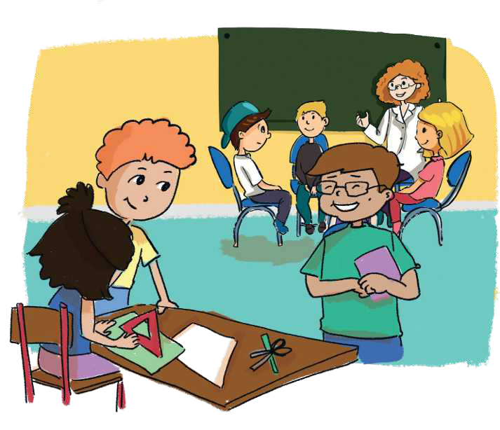

TEMATIKA 6: MEDIET
3.FESTA JONË

Sot është një ditë e bukur dhe shumë interesante për klasën e Ditës dhe të Diellit. Ata kanë vendosur të zhvillojnë një garë lojërash me rastin e 1 Qershorit, Ditës së Fëmijëve.
Gara do të bëhet me të gjithë moshatarët e tyre të shkollës. Klasa e tyre vendosi të garojë me lojërat më të pëlqyera dhe të përshtatshme për moshën dhe mundësitë e tyre.